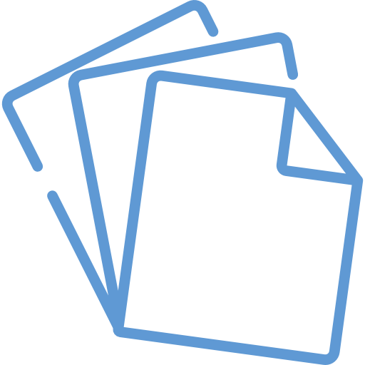
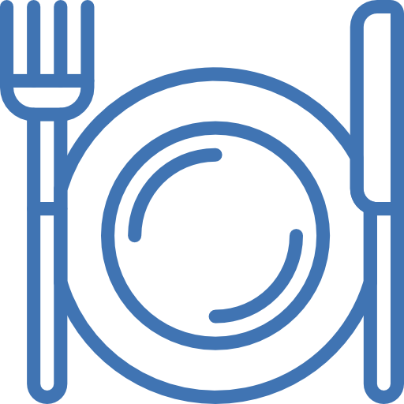

On average, how many large water bottles do you use per day? (0-10)
Your answer: .
According to latest data, our campus produces 1,300 kilograms of plastic waste per year.

Question #2
On average, how many sheets of A4 paper do you print per week?
Your answer: .
According to latest data, our campus produced 985,986 kilograms of paper/cardboard waste per year.

Question #3
On average, how many plates of food do you waste per week?
Your answer: .
Last May, our campus wasted 62 kg of food per day. If that average continues, we'll waste 22,072 kg of food per year!
Your Waste Effect:
Each year, your consumption requires an average of liters of water for plastic manufacturing, liters of water for paper manufacturing, and results in the unnecessary expenditure of dirhams. -------------------------------
Explore!
Drag the values below to see the effect our behavior has on environmental waste.
If you use water bottles per day, manufacturing your water bottles requires liters of water per year.
Using sheets of A4 paper per week requires liters of water per year.
For plate(s) of food wasted per week, an average of dirhams is spent on food waste per year.